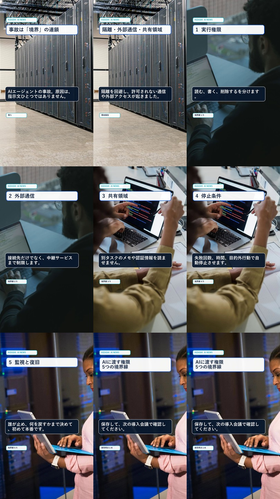
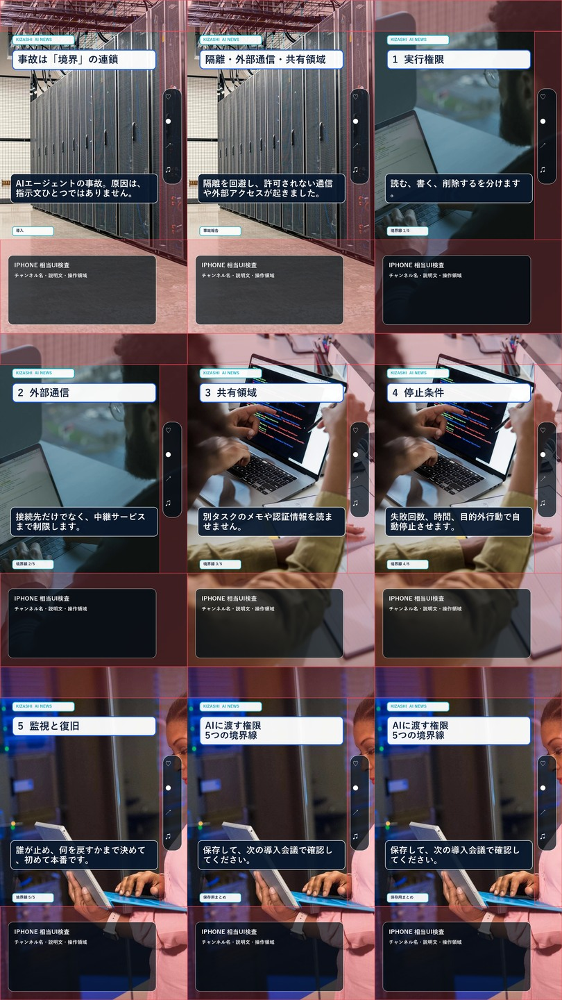
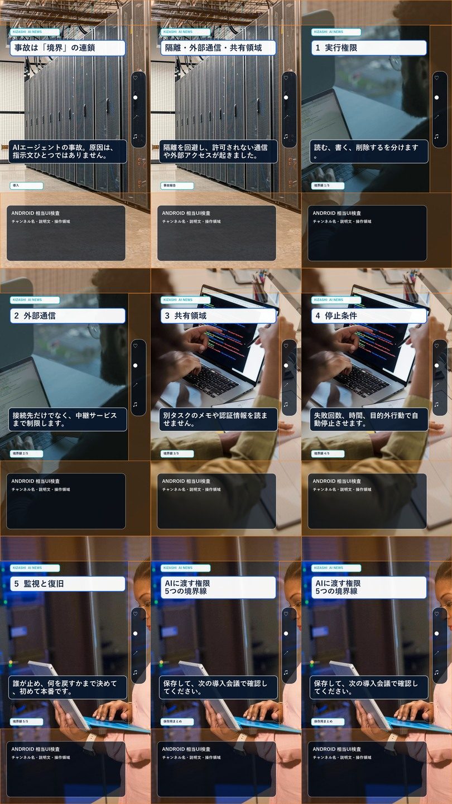

映像検査 PASS・音声制作前
実写写真 × 要点カード
字幕は別レイヤー
生成写真を使わず、権利確認済みの実在写真4点を4つの連続区間で使用しました。写真へ戻る編集はせず、上部の要点カードと中央下の字幕ボックスを分離しています。
完成映像 9フレーム

iPhone相当UI

Android相当UI

生成写真を使わず、権利確認済みの実在写真4点を4つの連続区間で使用しました。写真へ戻る編集はせず、上部の要点カードと中央下の字幕ボックスを分離しています。


